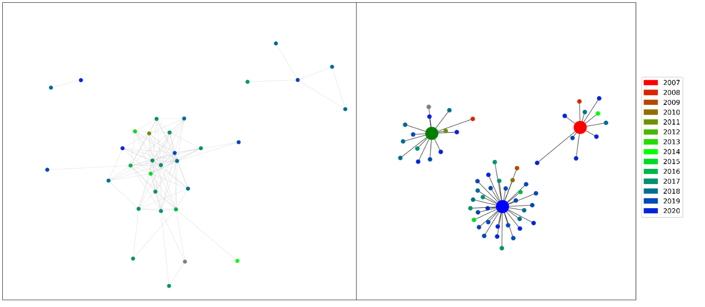

Case Study 1: Exploring the reception of BTS and BLACKPINK through the lens of fandom
This case study examined the work and reception of certifiably the two most popular K-pop groups in the English-speaking charts: BLACKPINK and BTS.
After having filtered the YouTube comments for those that express an opinion using the opinion miner, I collected keyword frequency data so as to perform some manual topic-modelling.
The conclusion I was able to draw from this was that commenters on BTS songs frequently used terms related to the fandom of the band, whereas BLACKPINK commenters overwhelmingly discussed the singers.
Elving-Hwang asserts that K-pop production companies often attempt to foster parasocial relationships between singers and their fans and completed a study that found that Korean fans had a tendency to fixate on a particular 'idol' (K-pop singer)1.
Based off this observation and the fact that the BLACKPINK singers' names were occurring with such great frequency within the corpus, I hypothesised that this same effect was occurring amongst English-speaking audiences.
Whilst I could have set out to prove this hypothesis with computational analysis such as that performed in case study 2, I elected to instead do so with a musicological approach.
The relative frequency of singer-tokens varied on different songs, and therefore I proposed that if I were not able to find any musicological reason why fans may decide to mention one singer over another in the comments section of a given video then that would point towards the expression of fan identity being the driving force behind the phenomenon.
The first musicological analysis I carried out was statistical analysis of the sung-time of each singer and whether that had an effect on how likely they were to be mentioned over another band member in the comment section
Due to time constraints, I narrowed my focus to the 5 most popular songs for BTS and BLACKPINK based on chart position and/or English language engagement on YouTube as this would necessarily prove us with more data from which to draw conclusions.
Figure 1.1 displays the sung-time and singer-token frequencies for these 10 songs comparatively as a composite bar chart
 Figure 1.1 - Composite bar chart displaying the sung-time and singer-token frequencies for 5 songs comparatively.
Figure 1.1 - Composite bar chart displaying the sung-time and singer-token frequencies for 5 songs comparatively.
Two conclusions were draw from this data through a number of statistical analyses:
1) Although initial uniformity between the datasets for BLACKPINK imply correlation, analyses of specific singers demonstrate that this is incidental.
2) Furthermore, comparison with the data pertaining to BTS highlights that it is possible to predict distributions of singer-name tokens on the basis of how much time in the song that singer occupies vocally; for BTS songs, there is a correlation between sung-time and singer-token frequencies, but not for BLACKPINK.
What followed was the first of two schematic analyses, with this one focussing on of two of BLACKPINK’s songs that displayed the most marked difference in singer-token distributions: ‘How You Like That’ and ‘As If It’s Your Last’.
In the former, commenters mention each of the band members with roughly the same frequency whereas in the latter there is a great deal of variation.
By comparing 6 musicological features – style, sung-language, rhythmic variation, diatonicism, vocal range, and solos – I was once again able to confirm that there was no musicological basis for one singer being favoured over another in the comments of these songs.
The second schematic analysis was concerned with mapping the sections of the song that a given singer occupied vocally.
The rationale for examining the songs in this way was that, logically speaking, if a singer occupies more time vocally in a song, commenters may be more likely to discuss them.
Figure 1.2: Waveform diagram of 'How You Like That' created using Sonic Visualiser2 segmented by singer and song structure.
 Figure 1.3 - Waveform diagram of 'As If It's Your Last' created using Sonic Visualiser2 segmented by singer and song structure.
Figure 1.3 - Waveform diagram of 'As If It's Your Last' created using Sonic Visualiser2 segmented by singer and song structure.
In contrast to previous analyses, by examining the above colour-coded waveform diagrams and comparing them to token-distributions, I was actually able to find a musicological reason as to why frequencies of singer-tokens varied.
I determined that the more uniform distribution of ‘As If It’s Your Last’ lead to a less uniform distribution of singer tokens, and I hypothesised that the reason for this was that its less complicated vocal structure meant that listeners/viewers of the song would have more uninterrupted time with which to form an opinion regarding a given singer’s vocal performance.
For example, the other vocalists’ sections could act as a musical foil for Lisa’s musically and stylistically distinct section, thereby causing it to be remarked upon with a much greater frequency.
Simply put, the fact that Rosé raps whilst the others (generally) do not would mean that she would stand out more in the minds of the commenters.
It is clear that musicological factors such as structure and style of vocals can at least partially influence singer-token frequencies between songs by the same artist.
This was an important discovery to have made and has great potential for future research, however, there still remains the question as to why singer-tokens appear in much greater quantities within the BLACKPINK corpus compared to that of BTS
In order to investigate this, I elected to investigate the degree to which the vocals of individual singers feature more heavily over the other musical elements of the songs.
I did so by controlling for chart popularity – specifically by selecting songs that displayed very similar average chart positions.
This is because songs by both bands which place higher in the charts also tend to display fewer instances of singer-tokens relative to the corpus size for the obvious reason that first-time listeners/commenters are not going to know the names of the band members.
Four songs present average chart positions close enough together for popularity of the song to be considered a controlled variable:
a) Life Goes On (BTS) and How You Like That (BLACKPINK) with average chart positions of 19 and 19.3 respectively
b) Fake Love (BTS) and Lovesick Girls (BLACKPINK) with average chart positions of 35.3 and 38 respectively
I then comparatively examined the instrumental elements of these two groups, the results of can be found in table 1.1 and 1.2 below.
Table 1.1: Table displaying the different instrumental elements of 'Life Goes On' and 'How You Like That'
Table 1.2: Table displaying the different instrumental elements of 'Fake Love' and Lovesick Girls'.
Whilst both BLACKPINK songs present relatively comparable levels of complexity, the same does not fully hold true for the BTS songs.
This is not reflected in the distributions of singer-tokens in the corpus of comments, however.
The total frequencies of singer-tokens for ‘Life Goes On’ and ‘How You Like That’ – group A - are 1.04% of the total tokens and 4.11% respectively; for ‘Fake love’ and ‘Lovesick Girls’ - group B - they are 1.51% and 4.80% respectively.
On the one hand, the fact that the singer-token frequencies for BLACKPINK are higher than those of BTS undermines the applicability of Elfving-Hwang’s contentions to the BLACKPINK fanbase (2018).
This is because it implies there is a strong basis to the hypothesis that the complexity of instrumental arrangement directly leads to commenters focussing less on vocalists in the group.
However, if this were the case, it would be expected that the proportion of singer-tokens between the two songs in group B to be much greater due to the fact that, as previously mentioned, ‘Fake Love’ is much more instrumentally complex. However, the inverse is true.
Commenters for the BLACKPINK song in group A discuss the singers at a rate of just under four times as often as those of its counterpart.
In comparison, the frequency of singer-tokens for ‘Lovesick Girls’ in group B is around three times that of ‘Fake Love’.
The conclusion that can be drawn here is that, based on the assumption that more complex instrumental arrangements draw focus away from the vocal lines and their respective singers in a song, it is highly likely that there is no musicological basis for BLACKPINK songs to be featuring higher levels of singer-tokens than those of BTS.
In sum, the two methods of analysis I carried out offered rich data to support the argument that the phenomenon of fandom is a principal means by which English-language K-Pop fans interact with its musical artefacts.
Whilst we were able to find data supporting discrepancies between singer-token frequencies amongst songs by the same artist, there was no musicological basis for the great difference in how often BLACKPINK commenters discuss the singers versus BTS commenters.
Thus, we can claim with a degree of certainty that the Elving-Hwang’s
1 assertion regarding the focus on specific singers in Korean fandoms being a form of fan expression also holds true for English-speaking audiences in the case of BLACKPINK.
The one confounding factor here is the fact that K-pop is an audio-visual product, and thus it could be that fans are actually commenting on some feature of these videos that is not captured by our purely musicological analyses.
Consequently, future research may wish to explore this dimension of the songs in order to investigate the effect, if any, that the visual has on the singer-token frequency distributions
1 Elfving-Hwang, J. (2018) ‘K-pop idols, artificial beauty and affective fan relationships in South Korea’, in Routledge handbook of celebrity studies. Routledge, pp. 190–201
2 Cannam, C., Landone, C. and Sandler, M. (2010) ‘Sonic visualiser: An open source application for viewing, analysing, and annotating music audio files’, in Proceedings of the 18th ACM international conference on Multimedia, pp. 1467–1468.
Case study 2: Exploring the attitudes towards language choice in reggaeton songs.
In 2006, Wayne Marshall 1 remarked on a new wave of Latin music sweeping the United States.
He noted that, whilst in previous years use of the Spanish language on the radio had been relegated to hits such as José Feliciano’s ‘Feliz Navidad’ (1970) and Ricky Martin’s ‘La Vida Loca’ (1999) (both of which contain snippets of Spanish), at the time of writing, “15 to 30 minutes blocks of Spanish-language pop” had begun to appear on hip-hop stations.
The name of this new genre of music was reggaeton.
The most famous reggaeton song of all time is undoubtedly ‘Despacito’.
Arbona-Ruiz credits this song as demonstrating to the world that Latin artists were starting to have a profound influence over the American music industry2, an influence that is reflected in the data collected throughout this project.
 Figure 2.1 - Bar chart visualising how many reggaeton songs charted in 6 English-speaking countries from 2007.
Figure 2.1 - Bar chart visualising how many reggaeton songs charted in 6 English-speaking countries from 2007.
Figure 2.1 offers a visual representation of the number of reggaeton songs charting each year, starting from 2007. It is clear from the data presented here that 2017, the year in which ‘Despacito’ released, was a turning point for the reception of reggaeton songs.
Thus, any project on foreign language music in 2021 would be necessarily incomplete without a focus on the what Acevedo calls the “Latin renaissance”
3 and the language attitudes thereof.
Limitations of the project at the time of performing this case study bar the use of advanced computational techniques in order to illuminate the topics discussed by commenters.
However, through the use of lower-resolution techniques such as keyword collocations, it will be possible to uncover the opinions of commenters on a specific, manually selected topic – language use in reggaeton songs.
In order to elucidate particular language attitudes through collocations, the first step was to decide the keywords around which term frequencies were to be collected.
“Spanish”, “English”, and “language” were the three necessary choices for keywords, however “understand” and “speak” were also included.
This is because manual surveying of the corpus revealed that listeners often express opinions about the song with an introductory phrase such as ‚ÄúI don‚Äôt understand‚Äù or ‚ÄúI don‚Äôt speak‚Äù, for example ‚Äúi dont understand it but i love itüòç‚ù§‚Äù.
Although not as explicit of a language attitude as a comment such as “Wow i love spanish now thank u for getting me into spanish”, comments such as the former can still be considered an opinion relating to language use.
The script used for text processing (which can be found at
here was broadly the same as that applied in chapters 2 and 3.
The exception was that the following three steps were added: 1) tokens containing the name of an artist were transformed into “artist_name, 2) the collection of ngrams (a sequence of n tokens combined into one), and 3) the combining of negatives and the subsequent word into one token, eg. “not understand” becomes “not_understand”.
At the end of the pipeline, a frequency table of the 100 most common ngrams and single-word tokens was generated.
A total of 2031 unique tokens appeared across all eighty-nine frequency tables.
These figures alone inform us that there is a large degree of similarity in opinions commenters express towards language use in the selected songs; only around one in five tokens in a given frequency table are unique to that table.
In spite of this general uniformity, there still lay value in attempting to elucidate which groupings, if any, existed within this corpus of frequency tokens.
In order to discern which frequency tables were most similar in their contents, and as a result group them, the method of cosine similarity was employed.
Figure 2.2 displays the groupings elucidated through this method.
Figure 2.2 - Network diagram of cosine similarities between frequency tables.
Two conclusions are immediately clear from figure 2.2: a) there is further evidence that all of the frequency tables display a great deal of similarity and b), there are three groups with differing semantic topics broached in the frequency tables.
Figure 2.3 displays colour-coded word clouds formed from the tokens of the frequency tables in figure 2.4’s red, blue, and green groups.
Figure 2.3 - Green, blue, and red (left to right) colour-coded word clouds formed from the frequency-table grouping in figure 2.2
With the clusters and respective word clouds established, the next step was to discover the relationship between other songs in the corpus and these groupings.
When the prevailing language attitudes of the groups were analysed and extracted, we could also relate songs in the wider corpus to these attitudes as we have already established what their relationship to the ‘parent’ cluster was.
To determine this relationship, an average cosine similarity between a given song and cluster was taken.
These relationships are visualised in figure 2.4 and it should be noted that the clusters are represented here by the colour-coded red, green, and blue nodes.
Due to the number and relative proximity of the nodes surrounding the blue group, I concluded that the language attitude(s) that users promote in the comment sections of these videos is the most common among reggaeton songs.
Figure 2.4 - Network diagram of parent-child relationships between individual songs and the clusters displayed in figure 2.2
What will follow is a brief summary of the language attitudes found in the word clouds so as to pin down teh general sentiment expressed by these clusters.
Green group
Although there is a passing similarity with the blue group, in order for the cosine similarity of the members of the green group to be dissimilar enough from the rest of the corpus to form a distinct cluster, there must be other, lower frequency tokens that appear at distinct frequencies.
The most notable of these is the token ‘shit’, which does not appear with great frequency in either of the other clusters.
Terraschke contends that this expletive can have varied and sometimes contradictory usages4.
Through manual surveying of the corpus, I discovered that, as a general rule, if a commenter is to use ‘shit’ in a positive manner, they will do so with the use of an adversative subordinating or coordinating conjunction, e.g. “I can’t understand any of this shit but I like it”.
By compiling a list of adversative conjunctions (‘but’, ‘although’, ‘nevertheless’, ‘however’, and ‘even though’), I identified that 47.2% of the total usages of the expletive were negative in sentiment.
Other tokens that appear with a high frequency are “say” and “word”.
In the majority of cases (69.2%), these tokens appear in conjunction with the keywords “understand” and “speak” (at a ratio of approximately 9:1 respectively).
Thus, we can conclude that another common topic for members of the green group (and the children thereof) is their lack of comprehension of the lyrics.
By highlighting their lack of comprehension of the lyrics, these commenters are setting clear boundaries between themselves and the foreign language singer.
If we draw from Brons’ theories on othering 5, we can hypothesise that this is an example of the commenters placing themselves in the ‘in-group’ whilst the singer is in the ‘out-group’.
Taking this in conjunction with the aforementioned common negative sentiment leads us to believe that, in this particular cluster, the process of othering is taking place when commenters express their attitudes towards language use.
Blue Group
The blue cluster is the most numerous in terms of core nodes and children nodes.
The two most frequent tokens expressed across all these corpora in conjunction with the language-related keywords are “love” and “song”.
Furthermore, these two tokens appear as a bigram (‘love song’) and are some of the only tokens to do so across the entire set of results.
There are other tokens with (potential) positive connotations that appear with fairly high frequency, e.g. ‚Äúlike‚Äù, ‚Äúgood‚Äù, and the emojis ‚Äúüî•‚Äù and ‚Äúüòç‚Äù.
Thus, it can be concluded that the overall reaction of listeners to the specific use of language is highly positive in these songs.
Another very frequent token that commenters use are ones related to the artist(s) of the song which have been normalised to appear as “artist_name” at the end of the pipeline, implying that when a language attitude is expressed, it is usually in conjunction with the artist of the song.
Red group
Of the three clusters, the red group displays the most variation in its vocabulary.
With the exception of discussing the artists, there is no real prevailing semantic theme throughout the cluster in terms of what topic commenters tend to broach when displaying a language attitude.
If one examines the lower-frequency tokens, however, the semantic field that is expressed is positive and contains many of the same tokens as the blue group (“love”, “good”, and “like”).
There are also adjectives such as “beautiful” and “sexy” that appear at about the same frequency, which is to be expected if the principal topic of discussion is the artists involved in the music.
It is not worth examining this in great detail so as to discern whether these tokens refer to the visual dimension of the music (as YouTube videos are principally an audio-visual medium) or the Spanish language as the tokens in question occur in such a relatively low frequency that drawing meaningful conclusions would be very challenging and would lack the ability to be generalised across the broader corpus.
Furthermore, because cosine similarity is sensitive to the magnitude of the vectors it takes as variables (which in this case is the frequency of a given token), the lower frequency tokens contribute very little to the overall similarity scores between the two frequency lists.
Thus, there is even less value in making generalisations based on these tokens.
Summary
To conclude, each word cloud represents a distinct grouping of ideas that commenters formulate when they discuss the use of language in the eighty-nine reggaeton songs.
The green cloud is characterised by a more negative attitude towards the use of foreign language in the songs, whereas the blue cloud is an overwhelmingly positive response.
The red cloud is a more disparate collection of frequency tables that are mainly linked as a result of placing the artists of the songs at the forefront when expressing a language attitude.
As previously established, the blue cluster is the largest both in terms of core nodes and child connections.
Additionally, the child nodes are mostly clustered close to the parent which demonstrates that the positive semantic field in this grouping does not diminish significantly.
Thus, an immediate, key conclusion that we can draw is that English-speaking users are generally receptive to the Spanish language in the context of reggaeton songs.
As with the blue cluster, the green child nodes are located in fairly close proximity to the parent and thus there is little dilution of the principal themes of the cluster among the children.
The red group, however, contains the greatest variation in relationship between the parent and children. This is to be expected given the lack in topic-coherence displayed in the corresponding word cloud (with the except of the “artist_name” token).
It follows that a group with a very disparate, low-frequency themes would also be more prone to topical diffusion.
With these conclusions in mind, we can make generalisations about the parent-child clusters in figure 4.6, thereby effectively partitioning the entire corpus into distinct units of opinion.
From these generalisations, we can apply three different filters to the clusters and examine the way in which the artist of the song, temporal factors, and geographical success affect the types of attitude expressed by commenters
Cluster analysis
Research has shown that musical audiences can be influenced when passing judgement onto performers by factors such as physical attractiveness
6, perceived social class
7 and physical movements
8.
This implies that the artist of a song may be one of the principal influences on the clusters observed in figure 2.4 and 2.6.
One of way of quantitively ascertaining the influence of artists on the groupings is by examining the distributions of songs by a given artist across the groups.
If this percentage roughly follows the same distributions of songs across the groupings, then we can conclude that a given artist has no influence on the way commenters react to the language used.
Table 2.1 - Table displaying mean percentage of songs by a given artist per group including featuring artists.
Table 2.1 shows the mean distribution of songs by a given artist across the three groups.
It is clear that there is no significant influence by the artist on the clusters of language attitudes.
We can infer this from the fact that the red and green groups on average contain the same amount of songs per artist – 40.7% and 45.2% respectively - whilst also containing the same amount of songs of the full corpus – 18%.
It was not until we included all featuring artists – not just the main – that this became clear.
Thus, one conclusion we can draw from this line of analysis is that including the featured artists is a necessary dimension when examining language attitudes in this manner.
Arbona-Ruiz contends that 2017 marked a turning point for the popularity of reggaeton songs
2.
I thus decided to investigate whether there was a concurrent turning point in the language attitudes displayed by commenters towards the Spanish language in this context.
Figure 2.7 visualises the release date of a reggaeton song through colour.

Figure 2.5 - Network diagrams displayed in Figure 2.2 and Figure 2.4 colour-coded for date of release. Note: coloured boxes corresponding to the group have been added in the left-hand diagram..
It is clear from this graph that there is no conclusive evidence that one group has a higher propensity to contain pre-2017 songs than another.
It should be noted, however, that if average date of release of all the songs in a given group is calculated then the results are as follows: Green = 2016.8, red = 2017.5, blue = 2017.8.
So, whilst there is no clear visual grouping in figure 2.3 vis-à-vis the date of release, songs in the green group tend to date earlier than the red and blue.
However, the fact that these values are so close together undermines the validity of drawing any meaningful conclusions from this analysis.
The final analysis I elected to carry out was through a geographical lens.
The rationale for doing so was that while commenters from different parts of the world may share a language, there is no guarantee that the hierarchical schema of language prestige from which they may draw their language attitudes are exactly the same.
For example, Achugar and Pessoa state that, in the United States, the Spanish language has long been associated with lower-wage workers and working-class members of society, principally due to the influx of migrants from Latin America
9.
However, it is highly unlikely that the same view of the Spanish language will be held by a New Zealand native due to the fact that the same geo-political forces do not exist in that region of the world.
Whilst country-specific metadata of the comments is not accessible for this project, one available resource is the charts data collated and analysed when identifying the foreign language songs in the earlier stages of the project.
I hypothesised that, were I able to assess and compare how well one song performs across different countries, I may be able to form conclusions regarding the demographic of the commenter-base.
There are three immediate challenges posed by attempting classify the songs in this way:
1) It is difficult to define quantitatively exactly what it means for a song to perform well in the charts,
2) Not all charts are comprised of the same amount of songs
3) Some countries have greater populations and thus some charts carry more weight on the YouTube corpus than others.
In order to combat the first challenge, created a general model of the trajectory of a song in the charts, visualised in figure 2.4
Figure 2.6 - Visual representation of the behaviour of the average song across all charts
What figure 2.4 shows us is that songs tend to enter the charts quite near to their peak position and after having done so gradually move down the rankings.
With this in mind it seems appropriate to make use of two metrics when comparing chart performance between two songs: a) the peak position of the song, and b) how many weeks it takes for the song to fall out the charts from this position.
However, this second metric is problematic because, as outlined above, not all charts are the same length.
For example, it may seem that a song has fallen much faster out of the New Zealand charts due to the fact that New Zealand only collates the top 40 most popular songs for a given week compared to 100 in the USA.
Consequently, I used the sole metric of maximum charting position as a measure for what it means to chart better in one country over another.
This leads us to the final challenge of using charts data when attempting to gauge the demographics of the YouTube comments which is the six countries do not possess equal populations – the population of the United States is roughly 4x the population of the rest of the English-speaking combined.
Thus, if we take it as a given that a large proportion of any reggaeton song’s comment corpus is comprised of American audiences, what we can then do is examine the charts data and observe if charting well outside the USA has any effect on the language attitudes expressed in the comments.
Figure 2.5 displays the network diagrams of language attitude clusters colour-coded for the country in which a song attained the highest charting position.
If the USA was this country (as was the case for sixty-one of the songs) then the country with the next highest chart position was selected if possible.
Figure 2.7 - Language attitude clusters colour-coded to show the country in which the song charted the highest.
In figure 2.5, it seems that there is no correlation between the language attitude clusters and chart performance.
Despite the rationale above, it is possible that this is because a) the technique chosen to measure chart success is too low resolution or ignores a necessary dimension of charting success, e.g., comparing the highest charting position relative to other countries as opposed to an absolute value, or b) YouTube comments are too far removed from, or are such a poor representation of, the charts for them to be reflective of thereof.
To expand on this, charts companies have long been incorporating streaming services into their data, however, they are doing so from many different sources such as Spotify, Deezer and YouTube
11.
Thus, it is possible that any nuance in terms of the extent to which listeners from a given country are represented in the YouTube comment section is erased when it comes to using the data from these multi-source datasets.
In this case study, I identified key clusters of opinion toward language attitude in the comments of eighty-nine reggaeton music videos.
The three lines of analysis, geographical, temporal, and by singer, were unable to provide a solid explanation for these clusters.
The first explanation could be due to the fact that the initial methodology for identifying the clusters treated the corpus of comments of a given song as one whole text and not as distinct units of opinion posted by a myriad of users.
The assumption on which I based this methodology was that commenters who remark on language attitudes would be highly influenced by the features of the music, and thus there would be general trends that uniformly track from video to video.
This, however, was observed not to be the case.
A potential clue to this was the fact that the cosine similarity threshold had to be raised to 0.95 before the clusters appeared, which demonstrated that there was a high degree of similarity between the different corpora.
In light of this, a bottom-up approach that worked by identifying themes from at the level of the comment and then working up to the whole corpus may find more decisive results.
Additionally, previous scholars have had found success using YouTube as a source for investigating language attitudes (see: Aslan and Vásquez, 2018; Ivković, 2013; Walters and Chun, 2011), however it is possible that in the context of popular foreign language music language choice is not as much of a contentious issue (unlike for the Eurovision song contest, as Ivković examines).
As a result, commenters may not concern themselves with such issues; on average, only 0.1% of those commenters who expressed an opinion about the song did so on the topic of the language used.
1Marshall, W. (2006) The rise of reggaeton. Available at: https://thephoenix.com/Boston/Music/1595-rise-of-reggaeton/ (Accessed: 6 September 2021).
2Arbona-Ruiz, M. (2017) The ‘Despacito’ effect: The year Latino music broke the charts. Available at: https://www.nbcnews.com/news/latino/despacito-effect-year-latino-music-broke-charts-n830131 (Accessed: 7 September 2021).
3Acevedo, N. (2019) Reggaeton fuels Latin music boom despite lack of award recognition. Available at: https://www.nbcnews.com/news/latino/reggaeton-fuels-latin-music-boom-despite-lack-award-recognition-n996161 (Accessed: 8 November 2021).
4Terraschke, A. (2007) ‘Use of general extenders by German non-native speakers of English’.
5Brons, L. L. (2015) ‘Othering, an analysis’, Transcience, a Journal of Global Studies, 6(1).
6Ryan, C. et al. (2006) ‘The effects of various physical characteristics of high-level performers on adjudicators’ performance ratings’, Psychology of music, 34(4), pp. 559–572. doi: 10.1177/0305735606068106.
7Griffiths, N. K. (2010) ‘“Posh music should equal posh dress”: an investigation into the concert dress and physical appearance of female soloists’, Psychology of Music, 38(2), pp. 159–177.
8Davidson, J. W. (1993) ‘Visual perception of performance manner in the movements of solo musicians’, Psychology of music, 21(2), pp. 103–113.
9Achugar, M. and Pessoa, S. (2009) ‘Power and place: Language attitudes towards Spanish in a bilingual academic community in Southwest Texas’, Spanish in Context, 6(2), pp. 199–223.
Case Study 3: ‘Alexa, play despacito’ – examining the role of the meme in the reception of viral foreign language songs.
Marwick contends that an example of social media-driven communication is the phenomenon of internet memes1.
She states than a contemporary internet meme is a (typically humorous) unit of culture that gradually gains popularity and influence as it is transmitted from person to person.
The concept of the meme is intrinsically linked to that of virality in the online space.
Goel et al. describe the process of ‘going viral’ in terms of a rapidly spreading contagion travelling from person-to-person 2.
Defining virality in this way provides us with a useful base upon which we can select the songs that will be examined in this case study.
Figure 3.1 shows the Google trends of these two songs between 1st January 2012 and 1st January 2019.
Figure 3.1 - Google Trends result for the search times ‘Gangnam Style’ and ‘Despacito’.
Within the corpus assembled in this project, ‘Despacito’ and ‘Gangnam Style’ are the fifth and first most numerous songs in terms of English-language comments (including replies). T
hese two songs excluded, the nine songs with the greatest number of comments all belong to either BLACKPINK or BTS.
In spite of this clear interest and popularity on YouTube, none of these K-pop songs ever reached above a 5 on the scale in figure 5.1, thereby demonstrating that they do not have the ‘virality’ of either ‘Despacito’ or ‘Gangnam Style’.
In fact, when other notable songs such as ‘Mi Gente’ by J. Balvin and ‘Gentleman’ by Psy were examined in the same way, they too did not present the viral success of ‘Despacito’ and ‘Gangnam Style’.
This does not mean that these songs will not be of use in the coming investigation.
The reason ‘Mi Gente’ and ‘Gentleman’ were singled out is they are apt ‘foils’ for ‘Despacito and ‘Gangnam Style’ respectively.
In the same way that one can easily draw parallels between ’Gentleman’ and ‘Gangnam Style’ (both are subversive examples of the K-pop genre by the artist PSY who have a focus on humour and visual storytelling), so are ‘Mi Gente’ and ‘Despacito’ comparable insomuch that they are reggaeton songs that garnered huge success in 2017 and were later remixed by highly successful anglophone artists (Beyoncé and Justin Bieber respectively).
With this in mind, these songs will provide a useful point of reference when determining the extent to which memes play a role in the way the English-speaking public engages with viral foreign language music on YouTube.
Xu et al. remark that there is a dearth in literature on the study of memes in the YouTube online space with scholars tending to focus more on other popular social networking sites like Facebook and Twitter
3.
Aslan and Vásquez also make use of their meme-oriented investigation on YouTube
4, however, theirs mainly concerns itself with the meme of the video itself and does not focus on identifying or tracking memes within the comments of the video itself.
If, as Xu et al. posit, there is a lack of studies on video memes on YouTube, then there is even less in the way of examining how text memes evolve within the comments of these videos.
This is the task that falls to me and given that there is no precedence which we can follow, I must also provide a conceptual framework for not only tracking these memes but identifying them in the first place.
Keyword approach
Manual surveying of the corpus for phrases containing the words “Alexa” and “Despacito” showed that text memes in YouTube comments are highly mutable.
Consequently, using simple string-matching is an inappropriate methodology to employ when trying to identify text-memes.
It is instead important that I wrote an algorithm that was able to account for potential syntactic/semantic changes in the text meme and the most straightforward way to do so was through the use of keywords.
Ferrara et al. propose a technique of identifying memes on Twitter with the use of what they coin ‘protomemes’5.
For Ferrara et al., protomemes are ‘atomic entities’ of memes, of which only one is the actual text contained in the tweet
The other elements of a tweet that these authors designate as protomemes are hashtags, mentions, and URLs to other websites.
By using this metadata, Ferrara et al. are successfully able to cluster tweets by the general topic they broach and thereby identify memes.
The issue with using this exact methodology in this situation is that there is no such metadata available for YouTube comments.
One element of metadata that is available to us when using a corpus of YouTube comments is the number of likes that a comment receives.
Hypothetically, the amount of likes a text-meme receives could be a useful, quantitative measure of the Darwinian process that memes undergo when spreading from user to user.
A common approach to natural language processing (NLP), and one of which this project has made extensive use, is the process of simplifying text for computation analysis in order to reduce its statistical noise.
Some of the measures that have been employed thus far are the removal of stop words, the lemmatisation of morphological variations, and the removal of extra-linguistic text features (excluding emojis).
Additionally, the subsequent techniques for the computational analysis of the processed text have also all been bag-of-words techniques that do not account for syntactic elements of the strings/
Given that the content of the text was just one aspect of Ferrara et al.’s successful approach toward the clustering of memes5, it is logical to assume that if this approach is to succeed it will be necessary to also employ some extra-semantic information when processing the strings.
. With this in mind, as strings were processed, the syntax of the string was also logged and employed when I identified the clusters of memes.
I elected once again to use the measure of cosine similarity when ascertaining to what degree comments were related in their contents.
The principal issue I encountered here was the sheer scale of the corpus of comments.
Unlike in case study 2 wherein only the cosines between 89 vectorised texts were being calculated, on Despacito alone there were 1.7 million different comments to be compared, which overall resulted in 2.89x1012 (just under three trillion) operations to be performed.
Initial tests using the cosine similarity function from scikit-learn that was previously employed in chapter 5 put the total run-time for 1.7 million comments at 4737 days – an unfeasible length of time for this project of this nature (and indeed any other) – but a number of optimisations were able to produce a speedup of 54x.
This principally involved making use of the Numba package and this function by Pranay Chandekar.
Additionally, as I was processing the comments iteratively, I needed only calculate n/2-n values, given that we need not compare the same two comments twice or compare a comment with itself.
In order to further reduce the time it took for this script to run, I also parallelised the script and only included comments that had received at least 1 like.
The rationale behind this is that, as Marwick states1, memes are subject to a Darwinian process of propagation akin to natural selection.
On YouTube, the logical way this would be expressed is through the number of likes a given comment has received from members of the public.
Now that I had designed an effective methodology for processing many billions of cosine similarities, I needed to incorporate syntactic features into the clustering methodology.
Syntactic approach
As previously established, ‘mutating’ syntax in order to alter the semantic purpose of the meme occurs frequently in the propagation of text memes on YouTube and is thus a key part in identifying them and analysing their uses.
One such example is a user mutating the syntax from the original clause “Alexa play despacito” in order to create “Alexa forget about despacito and play taki taki”.
It would be ideal if were able to build a model for processing language that would be able to identify, for example, the general trend of “Alexa” followed by an imperative verb and a noun corresponding to a song title, as we would be able to collect instances of both this mutation and others like it.
To this end, I made used of
averaged perceptron to generate Part-of-Speech (POS) tags for the comments.
Within the practical implementation of the algorithm, I elected to exclude those comments that were less than three tokens in length and subsequently increase the minimum length of POS pattern to be matched from two tokens to three.
There were two advantages to doing this: 1) We vastly reduced the potential for false positives, and 2) We decreased overall run time for the algorithm.
As I was simply looking for a matching substring within the POS sequence, I employed a rolling window of trigrams along one comment to be checked against a hash table containing all trigrams in another comment.
This was a rapid and effective manner of detecting matching POS sequences.
Were this syntactic approach and the above cosine keyword approach taken in isolation without any of the Pythonic mechanisms for accessing comments and passing them to these functions, we would be able to compare the entire 1.7 million comments on ‘Despacito’ in just a few hours.
However, Mamaev states that, as a language, Python is particularly slow in its implementation of iterators such as those that we are employing here; making use of another programming language such as Go or C can lead to an increase in speedup of upwards of 500 times
6 .
Making use of Pythonic iterators to loop through an entire corpus once again puts the total run time of this script in the hundreds of days.
I thus elected to reconceptualise how I approached the problem in order to once again allow me to process cosine similarity and POS tags with Python and NumPy in a timely fashion.
Optimisation of Python
The principal bottleneck that I had been facing thus far is the fact that Python is prohibitively slow at iterating through sets of data in order to perform functions on them
6.
In order to overcome this limitation, I employed NumPy universal functions and Python hash maps in order to calculate my results, not on a comment-by-comment basis, but by operating on the data structure itself.
Solomon classifies the process of vectorisation as the “ability within NumPy to express operations as occurring on entire arrays rather than their individual elements”
7.
With the use of NumPy vectorisation, we can “delegate the looping internally to highly optimized C and Fortran functions”, thereby performing the operation several orders of magnitude more quickly (ibid.).
This extreme increase in speed does come at a cost, however: the fact that we are able to perform calculations on large arrays as a whole necessarily means the output takes up n2 amount of memory to store.
GitHub user Denziloe provides a
rapid solution to this memory problem by processing the word-frequency matrix in chunks(2018), which I modified to dump the results (in this case the indices relating to comments in a list of those values over a threshold of 0.5) to file after every chunk.
The fact that we were iterating over the chunks of data and also dumping to file contributed greatly to the run-time of the script, but this script was able to process 20,000 comments in this was in a matter of seconds – a vast increase over the previous method that employed Pythonic iterations
Now that we had disposed of nested Pythonic iterations for calculating cosine similarity, we were no longer able to concurrently test for common sequences.
Instead, it was necessary to reconceptualise the way we approached locating common sequences and instead process the data as one discreet structure.
Instead of performing pairwise comparisons of the comments, instead I elected to simply iterate through the corpus once and add all the trigrams of POS tags to a dictionary, the keys of which were the POS trigrams and the values of these trigrams was a set of all the comments in which this trigram occurred.
Given that we are performing this project with Python, it was inevitable that I would have to perform a process of lengthy iteration through the data in order to parse it.
Thanks to the steps taken above, however, this was an incredibly streamlined process compared to what I was contending with beforehand.
As the script traversed the dictionary of POS tags, it would check the associated value (comprised of a list of all the comments containing that tag) for the presence of both elements of the cosine pair it was currently examining.
This was not as prohibitively long a process as may first seem for three reasons: 1) POS tags are a generalisation of textual data; 2) common POS sequences were added to the dictionary first due the iterative nature it was filled; and 3) I stored the list of comments associated with the POS trigram key as a hash map.
Therefore, it is not necessary that the script must loop through a prohibitively long list of POS trigrams – for the 42,418 comments collected from ‘Despacito’ the length of the dictionary of POS trigrams was only 9264 values long
Furthermore, as the comments were added (either to an existing entry or by creating a new one) to the POS keys in the dictionary as they were encountered in the corpus, it is logical that the most common sequences would be found nearer the beginning of the structure.
This means that while iterating through the POS dictionary has the potential to take up O(n) time (i.e., an amount of time proportional to the length of the data structure), in reality, it was much quicker as we would typically encounter a POS tag with both the comments we were examining much earlier in the dictionary.
The end result of this was a large array containing all the pairs of comments that both had above a cosine similarity score of 0.5 and also contained a common sequence of part-of-speech tags.
From here it was trivial to parse this data and find clusters of comments by following the chains of links between them.
With this, we hope to elucidate the extent to which memes play a role in the way the public receives foreign language music.
Discussion of results
Table 3.1 - Table showing the percentage of comments that were filtered from the raw data.
The output of the above methodology was a list of comment pairs that both were above a cosine similarity threshold and contained a common part-of-speech sequence.
By calculating a simple percentage of the comments that passed both of these checks, we will be able to draw some cursory conclusions that will provide a basis for the analyses to come.
From the data in table 3.1, we can conclude that there is a clear disparity here between viral and non-viral songs.
‘Gangnam Style’ and ‘Despacito’ (viral) have a higher proportion of comments that passed the checks previously outlined than ‘Gentleman’ and ‘Mi Gente’ (non-viral).
This implies that comments on their music videos tend to be more highly correlated with each other in terms of syntax and content and supports the hypothesis that repeated memes form a large part of the way that commenters interact with these cultural artifacts.
One way to visualise the data produced by our methodology is as a network of comments linked by similar comments and syntactic structures.
Figures 3.2 and 3.3 are network graphs visualising these relationships, all of which have been generated with Gephi
8.
The .gexf files used to generate these graphs can be found in the graphs subfolder of the memes_datasets zip file
here.
Figure 3.2 - Network diagram of comments on ‘Gentleman’ (left) and 'Gangnam'. Made with Gephi.
Figure 3.3 - Network diagram of comments on 'Mi Gente' (left) and 'Despacito'. Made with Gephi.
With this network created, the next goal was to identify communities within the networks that would correspond to meme clusters.
Rossetti et al. contend that discovering communities in networks is amongst the most researched problems in network analysis
9.
Consequently, they provide a python package by the name of
CDLib that contains a multitude of community detection algorithms.
Traag et al. contend that the Louvain algorithm is one of the highest rated in community detection, however it contains a defect that means that crucial connections can be overlooked
10.
In order to combat this defect, they propose the Leiden algorithm, which employs a similar methodology but without the same defect as the Louvain.
Table 3.2 shows the number of communities identified with the Leiden algorithm, the number of nodes within these communities, the largest of these communities, and the average number of nodes across the communities in each of the four songs I examined.
For the latter, two values have been provided – the first is the average community size with all data included whereas the second is the average calculated only from communities that contain three or more nodes.
By creating this threshold, I was provided with a more holistic picture of the data that excludes the potential influence of skew on the figures.
Table 3.2 - Table showing the number of nodes, number of communities, average community, and largest community across the four songs examined in this case study.
Broadly speaking, the results in table 3.2 reflect what I expected to see from the relative sizes of the corpora to which they pertain.
From largest to smallest, the corpora are ordered as follows: ‘Gangnam Style’, ‘Despacito’, ‘Gentleman’, and ‘Mi Gente’.
The distributions of data across all metrics follows this pattern exactly, however not to the degree that we would expect.
The ‘Gangnam Style’ corpus is roughly 8x larger than that of ‘Gentleman’ and it logically follows that we would expect 8x more communities to be present in the former.
However, we only see approximately 2x more communities amongst in the corpus of ‘Gangnam Style’.
This disparity is even more pronounced in the comparison between ‘Despacito’ and ‘Mi Gente’ with the former containing 24x more nodes and yet only 4x more communities.
The reason for this stark difference is hinted it by the average and largest community sizes.
Table 3.3 - Table showing ratio between values in table 3.2 for song pairs.
From table 3.3, I was able to draw two clear conclusions as to why ‘Gangnam Style’ and ‘Despacito’ present such different values for number of communities than what we would predict based off the corpus sizes alone.
1: The ratios between the sizes of the largest communities much more closely mirrors the difference in corpus sizes as would be predicted.
2: The fact that we only see a minor increase in the ratios when we remove clusters under 3 nodes in size implies that the size of the largest community for each song is not anomalous.
In fact, this minor increase shows that there is a more uniform distribution at the top end of the spectrum.
The combination of these two facts informs us that the corpora for ‘Despacito’ and ‘Gangnam Style’ contain several highly populous clusters of similar comments.
Given the methodological steps I undertook to generate this data, there is a high probability that these clusters do in fact contain memes.
However, in order to properly test this hypothesis, I needed to perform manual, qualitative analysis on the clusters.
In order to perform said qualitive analysis, I inspected the 25 most populous clusters in ‘Despacito’ and ‘Gangnam Style’ and manually deemed whether the contents could be considered a meme or not.
The criteria upon which this was based was that outlined by Marino
11
Based on this analysis, I contend that the meme plays a much greater role in ‘Despacito’ than ‘Gangnam’ style. Only 3 out of ‘Gangnam Style’s’ 25 communities contain a significant presence of what we can deem a meme.
For ‘Despacito’, however, this number increases to 8, one of which being the second largest community.
What this shows is that, in answer to the question of the role that memes play in the way the English-speaking public receives these songs, the answer is that it is not particularly significant.
From the data we have collected meme-clusters appear to account for just over a fifth of the 25 most numerous in the comments of ‘Despacito’ and only an eighth of the ‘Gangnam Style’ corpus.
Additionally, the majority of the memes in ‘Despacito’ comments are actually derivatives of one particular meme: the ‘hotel trivago’ meme.
The tweet that popularised this meme can be found in figure 3.4 and its prevalence within the corpus is likely due to the fact that this meme went viral at roughly the same time as ‘Despacito’
Figure 3.4 - Image of the tweet that popularised the ‘Hotel Trivago’ meme.
Had the two have been more temporally separated, it is entirely possible that we would not see as many memes in the corpus of Despacito.
Regardless, this case study still managed to build a robust framework for identifying memes within a corpus using Part-Of-Speech tags.
This is an important contribution to the field of Digital Cultures, and any future researchers are able to employ this flexible and powerful methodology to their own ends with the links found above.
1Marwick, A. (2013) ‘Memes’, Contexts, 12(4), pp. 12–13.
2Goel, S. et al. (2016) ‘The Structural Virality of Online Diffusion’, Management science, 62(1), pp. 180–196. doi: 10.1287/mnsc.2015.2158.
3Xu, W. W. et al. (2016) ‘Networked cultural diffusion and creation on YouTube: An analysis of YouTube memes’, Journal of Broadcasting & Electronic Media, 60(1), pp. 104–122.
4Aslan, E. and Vásquez, C. (2018) ‘“Cash me ousside”: A citizen sociolinguistic analysis of online metalinguistic commentary’, Journal of sociolinguistics, 22(4), pp. 406–431. doi: 10.1111/josl.12303.
5Ferrara, E. et al. (2013) ‘Clustering memes in social media’, in 2013 IEEE/ACM International Conference on Advances in Social Networks Analysis and Mining (ASONAM 2013). IEEE, pp. 548–555.
6Mamaev, M. (2018) If you have slow loops in Python, you can fix it…until you can’t. Available at: https://www.freecodecamp.org/news/if-you-have-slow-loops-in-python-you-can-fix-it-until-you-cant-3a39e03b6f35/ (Accessed: 16 January 2022).
7Solomon, B. (2018) Look Ma, No For-Loops: Array Programming With NumPy. Available at: https://realpython.com/numpy-array-programming/ (Accessed: 16 January 2022).
8Bastian, M., Heymann, S. and Jacomy, M. (2009) ‘Gephi: an open source software for exploring and manipulating networks’, in Third international AAAI conference on weblogs and social media.
9Rossetti, G., Milli, L. and Cazabet, R. (2019) ‘CDLIB: a python library to extract, compare and evaluate communities from complex networks’, Applied Network Science, 4(1), pp. 1–26.
10Traag, V. A., Waltman, L. and Van Eck, N. J. (2019) ‘From Louvain to Leiden: guaranteeing well-connected communities’, Scientific reports, 9(1), pp. 1–12.
11Marino, G. (2015) ‘Semiotics of spreadability: A systematic approach to Internet memes and virality’.